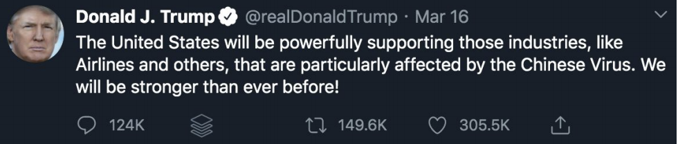
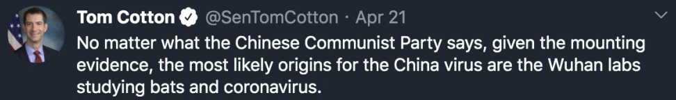
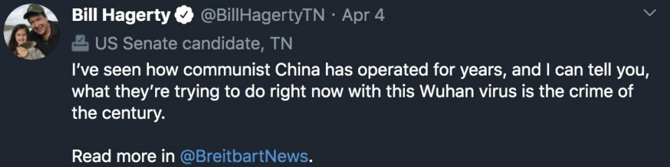

The Atlanta spa shootings on March 16 triggered a public outcry against the anti-Asian hate incidents in the United States, which had been on the rise since the beginning of the coronavirus pandemic. It had been almost one year since COVID-19 began to spread internationally, leaving millions dead. In that time — from March 19, 2020 to Feb. 28, 2021 — the Stop AAPI Hate reporting center based in San Francisco, California, received 3,795 incident reports. Verbal harassment made up 68.1% of the incidents, and shunning made up 20.5%.
Twitter also saw an increase in anti-Asian rhetoric, with Republican politicians tweeting stigmatizing phrases such as “Chinese virus” and “plague from China,” according to Stop AAPI Hate’s rhetoric report. Google Trends also saw major spikes in searches for “China virus” and “kung flu” in June 2020 and another spike for “China virus” in January 2021.
Racist Rhetoric
In a study of over 30 million COVID-related tweets in the span of three months, the Computational Data Lab for the Web and Society at the Georgia Institute of Technology found a total of 891,204 anti-Asian hate tweets and 200,198 counterhate tweets.
The United States saw a major spike in anti-Asian hate tweets after former President Donald Trump’s first “Chinese virus” tweet in March 2020. His tweet was retweeted over 149,000 times.
  According to the Stop AAPI Hate national report, a professor in College Park, Maryland — home to the University of Maryland — referred to COVID-19 as the “China virus” and said, “We’ve gotta be very careful about that country and what they’d do to us.”
The racist rhetoric used by prominent American politicians and leading conservatives spread rapidly across the country, with approximately four in 10 Americans reporting it is now more common for people to express racist views about Asian people than before the pandemic, according to the Pew Research Center.
Attention on Asians
The Atlanta spa shootings, which resulted in eight people dead, six of whom were Asian women, were just the beginning of a drastic increase in reporting and attention to the anti-Asian bias in the U.S. Since then, an increased amount of photos, videos and testimony has arisen, depicting verbal and physical harassment against Asians.
In San Francisco, a 75-year-old Asian woman was waiting to cross the street when a man approached and punched her in the face. In Chinese, the woman said, “You bum, why did you hit me,” according to USA Today. The attack came just one day after the Atlanta shootings.
Just came upon an attack on an elderly Asian woman on Market Street San Francisco. Effort I got more details pic.twitter.com/5o8r0eeHE2
— Dennis O'Donnell (@DennisKPIX) March 17, 2021
On March 29, a 65-year-old Asian woman was knocked down and repeatedly kicked in the head on the streets of Hell’s Kitchen in New York City. Various surveillance footage and pedestrian videos showed a man kicking the woman to the ground, stomping on her head and walking away.
Here’s another angle of the 65-year-old Asian American woman (Filipino) repeatedly kicked in her head in Hell’s Kitchen yesterday. Witness says a man chased down the assailant to confront him but the perpetrator pulled a knife. @NYPDHateCrimes is investigating. #StopAsianHate pic.twitter.com/g72QiDXlG1
— CeFaan Kim (@CeFaanKim) March 30, 2021
On top of increased reporting, many organizations and individuals hosted vigils and rallies to honor and stand with victims of Asian discrimination. At the University of Maryland, various individuals and organizations came together to host a vigil on March 24 for the Atlanta spa shootings’ victims. Tiffanie Choi, one of the student organizers, spoke at the event, giving a heartfelt testimony under the dreary sky.
“Right now, we are all afraid to live. We are afraid to walk out that door because there is no system that protects us … On our bad days, we do not point the gun at others, the gun is pointed at us,” Choi said.

Photo by Olivia Wolfson
While some people stereotype Asian Americans to be “invisible” or not a part of the racism conversation, Dr. Janelle Wong, a professor of Asian American studies at the University of Maryland, said she sees lots of activism on campus and throughout the country.
“I think we have agency, I think there is a lot of activism,” Dr. Wong said. “It really depends on if Asian Americans are going to also put their energies into standing broadly for racial justice.”
As of April 29, at least 44.3% of Americans are partially vaccinated, and 30% of Americans are fully vaccinated, according to the Washington Post. For some Americans, these numbers mean a return to normal life is on the horizon, and the anti-Asian discrimination issue may fall on the backburner. However, students like Elizabeth Hsu, a sophomore at the University of Maryland and a student organizer of the AAPI vigil, hope people realize the issue has been prevalent for much longer than since the start of the pandemic.
“These aren’t just new stories that are going to pass by and go away,” Hsu said. “People now are just starting to realize how severe the hate crime[s] has become against Asian Americans."